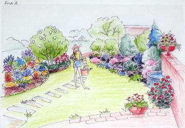
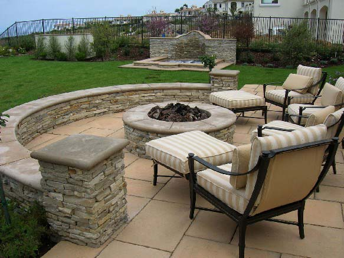
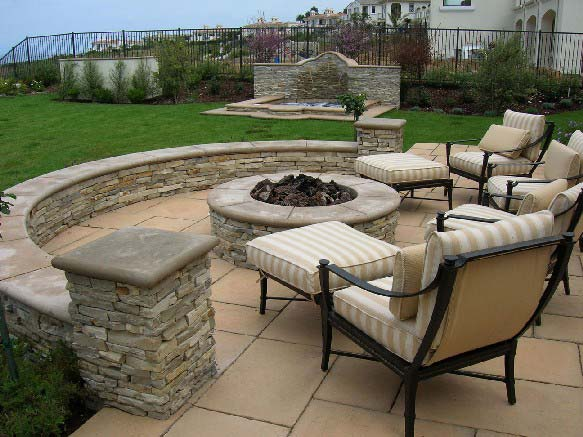
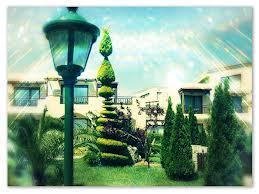
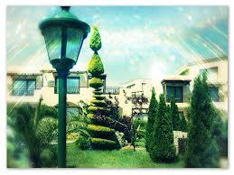
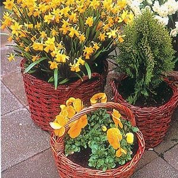
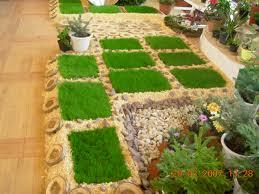

Одним из направлений ландшафтного дизайна, а точнее ландшафтной архитектуры является патио. Эта идея оформления внутреннего дворика появилась сравнительно недавно и пришла к нам из Средиземноморья, но в Черновцах она приобретает все большую популярность.

Патио – это своего рода комната отдыха на свежем воздухе, место встреч для бесед или «зимний сад» под открытым небом.
Патио – это дворик или терраса, окруженная стенами, галереями или изгородями из зеленых насаждений - кустарников и деревьев, особенно шикарно будет выглядеть патио в обрамлении из шпалерных роз, которые, даже в нашем климате, цветут до самых холодов.
Часто, обустраивая дворик, домовладелец сталкивается с проблемой оптимального использования относительно небольшого пространства. Поэтому перед ландшафтным архитектором стоит непростая задача, наполнить внутренний дворик приятным и гармоничным «содержанием» – скульптурами, мебелью для отдыха, фонтанами, прудами, продумать элементы ландшафтного дизайна.
План внутреннего дворика.

План будущего внутреннего дворика должен разрабатываться с учетом количества жильцов и пожеланий каждого из них. Решите, будет ли стоять мебель в патио, или он будет представлять собой нечто наподобие проходной комнаты. Определитесь со степенью озеленения: вы согласны ограничиться газоном и несколькими кустами, или дворик видится вам как сад в четырех стенах? Безусловно, одним из факторов, определяющих настроение дворика, является сам дом, его архитектурный стиль, фактура и цвет стен. Последние служат фоном, от которого дизайнер отталкивается при выборе настроения и общей цветовой гаммы дворика.
Все начинается с планировки. Это должна быть предельно ровная поверхность, расположенная в тихом уголке сада или рядом с верандой у дома. Главное, чтобы пейзаж вокруг патио был приятен для созерцания. Площадку для патио необходимо вымостить. Форма площадки может быть разнообразных геометрических форм. Выбор материала для площадки под патио огромен, даже если приобрести его в Черновцах. Это может быть обыкновенная декоративная тротуарная плитка, или дерево, или природный камень пластушка, или керамогранитная плитка. Все зависит от стиля и бюджета.
Мебель.
  
Для того, чтобы ваш дворик превратился в настоящую комнату под открытым небом, его необходимо обставить.
Прежде всего, абсолютно необходимые элементы – это достаточное количество мест для сидения и стол. Даже если вы не планируете принимать здесь гостей, все равно желательно, чтобы было куда положить книгу, поставить бокал шампанского или чашечку кофе. Вокруг пластикового, стеклянного или деревянного столика можно расставить садовые кресла или диванчики. Можно также поставить скамейку, установить качели, шезлонг, барбекю.
Освещение.
  
Обязательно стоит предусмотреть освещение, чтобы можно было ужинать вечерами на мощеном дворике. Фонари могут быть размещены на стене дома или установлены на столбах. Если проложить проводку невозможно, воспользуйтесь фонарями на солнечных батареях или садовыми факелами (главное - не забывать о технике безопасности при их использовании).
Аксессуары.
 
Чтобы дворик стал максимально уютным, можно дополнить его интерьер разнообразными статуэтками, фигурками и т.п. Важно только не переборщить с аксессуарами, чтобы патио не выглядело загроможденным.
Превосходно украшают патио также разнообразные перголы и решетки с вьющимися растениями. Можно, например, сделать несколько посадочных карманов

вдоль стены дома, установить решетку и высадить растения для вертикального озеленения – это оживит скучную стену. Можно также установить перголу-навес, которая защитит от жаркого летнего солнца.
|